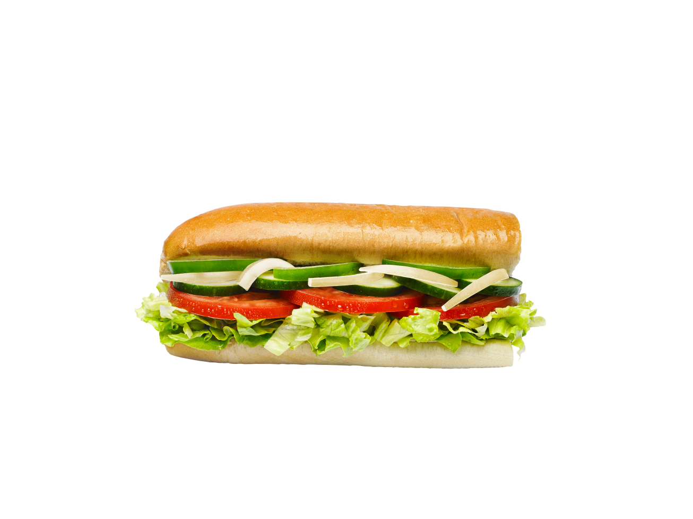
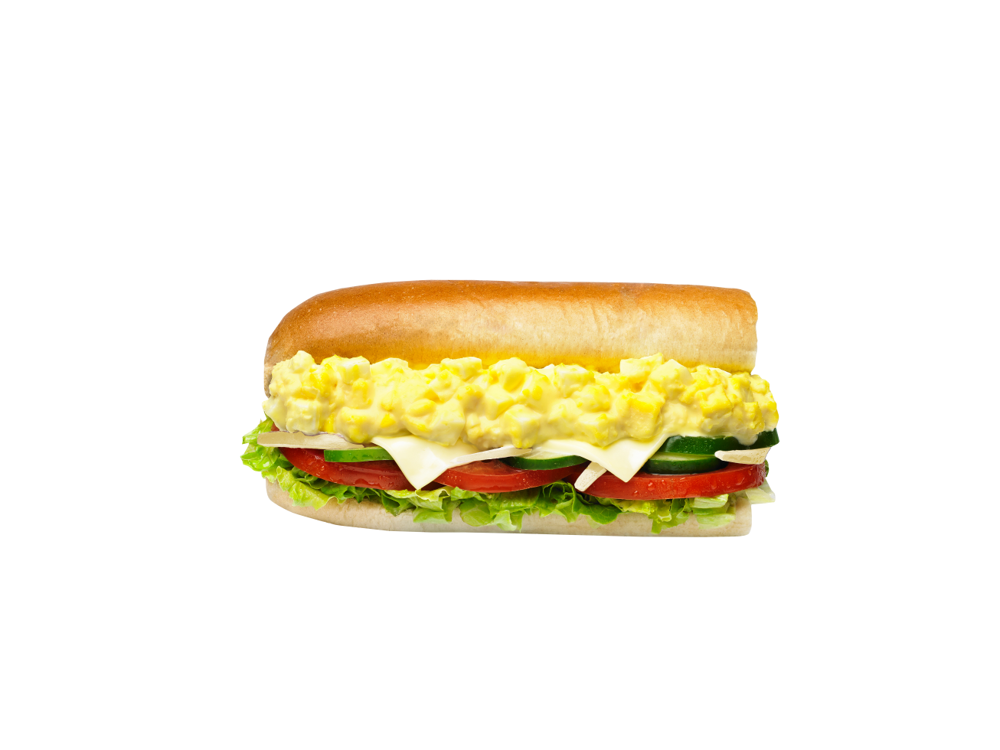
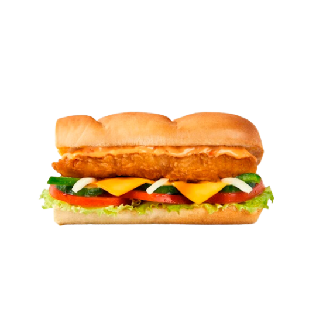
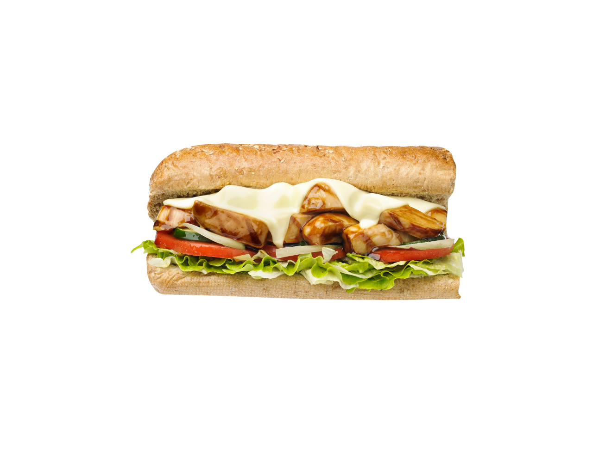
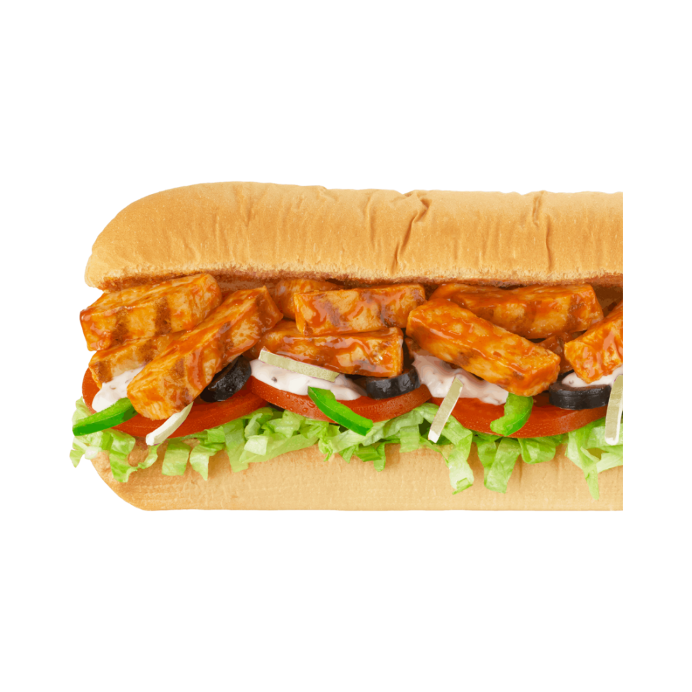
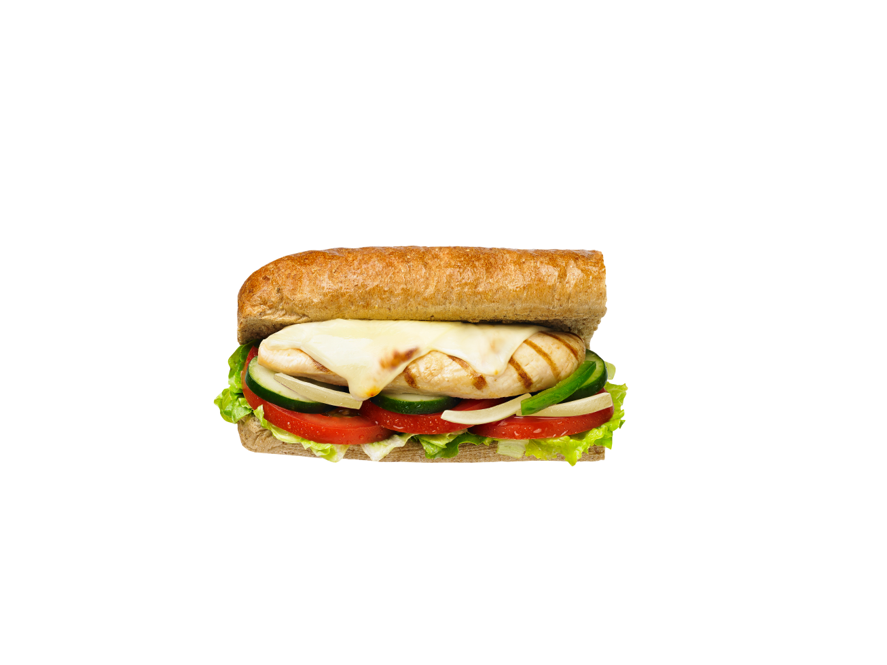
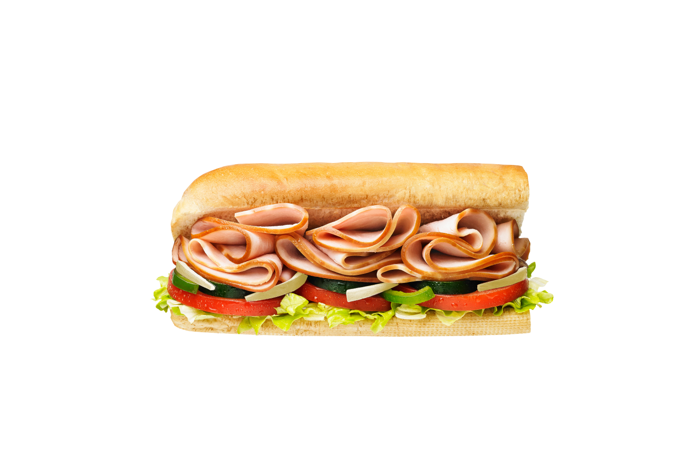
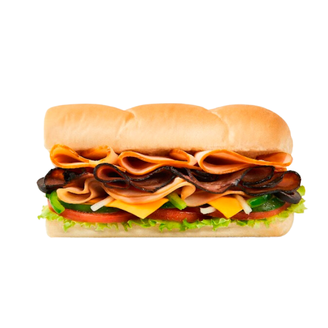

Subway adalah waralaba restoran cepat saji multi-nasional Amerika yang mengutamakan menjual sandwich (kapal selam), wrap, salad, dan minuman.
Subway didirikan oleh Fred DeLuca yang berusia 17 tahun dan dibiayai oleh Peter Buck pada tahun 1965 sebagai Pete's Super Submarines di Bridgeport, Connecticut. Restoran ini berganti nama menjadi Subway tiga tahun kemudian, dan operasi waralaba dimulai pada tahun 1974 dengan restoran kedua di Wallingford, Connecticut. Sejak itu, telah berkembang menjadi waralaba global.
Subway menyajikan berbagai pilihan topping, memungkinkan pelanggan untuk memilih topping mana yang dimasukkan dalam sandwich mereka. Slogan Subway lama, "Eat Fresh", dimaksudkan untuk menunjukkan bahan-bahan segar yang digunakan dalam sandwich mereka.
Subway adalah waralaba dengan pertumbuhan tercepat di dunia pada tahun 2015 dan, pada Juni 2021, memiliki 37.540 lokasi di lebih dari 100 negara dan wilayah. Lebih dari separuh lokasinya (21.796 atau 58,1%) berada di Amerika Serikat. Restoran ini juga merupakan rantai restoran merek tunggal terbesar, dan operator restoran terbesar, di dunia. Kantor pusat internasionalnya berada di Milford, Connecticut.
Restoran Subway pernah membuka cabang di Indonesia pada sekitar era 1990-an, tepatnya di Mal Pondok Indah, Mal Taman Anggrek, Plaza Senayan, Mal Ciputra, dan Wisma 46, Jakarta, serta di Kuta, Bali, hingga bulan Oktober 2000, namun semua cabang tersebut ditutup pada tahun 2005. Salah satu cabang Subway di Indonesia, yakni di Mal Taman Anggrek, Jakarta, kini ditempati Tous Les Jours. Subway kembali hadir di Indonesia pada tahun 2021 di bawah Mitra Adiperkasa (MAP Boga Adiperkasa, yang juga mengoperasikan waralaba Burger King, Domino's Pizza, Krispy Kreme dan Starbucks) melalui anak perusahaannya, PT Sari Sandwich Indonesia, dan membuka cabang pertamanya di Cilandak Town Square, Jakarta pada tanggal 15 Oktober 2021. Hingga bulan September 2023, Subway telah memiliki berbagai cabang di Jabodetabek, Karawang, Bandung, Semarang, Surabaya, Yogyakarta, Malang, dan Bali.
|  Veggie Delite Rp25,000.00 |
Egg Mayo Rp25,000.00 |
Breaded Chicken Strip Rp37,500.00 |
Chicken Teriyaki Rp39,500.00 |
|---|---|---|---|
|  BBQ Chicken Rp39,500.00 |
Roast Chicken Rp39,500.00 |
Chicken Slice Rp35,000.00 |
Subway Turkey Club Rp58,500.00 |
ANDA DAPAT MEMESAN SECARA ONLINE MELALUI :
ORDER